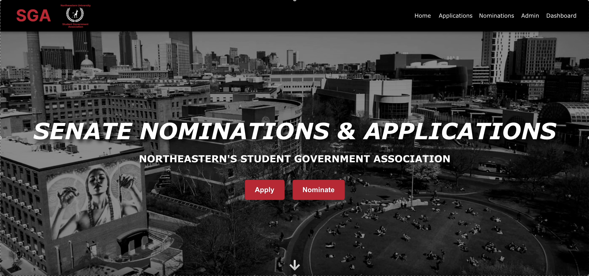

02
Full-stack apps

solo project · peer-to-peer marketplace
No Show
A marketplace for trading fitness class spots. Post a spot you can't use and someone else claims it. A smart matching engine on Supabase Realtime routes each spot to the best-fit seeker and advances the waitlist if unclaimed within 30 minutes, secured by row-level security across four Postgres tables.
TypeScriptReactSupabaseVite

team project · full-stack platform
SGA Nomination System
A centralized platform that streamlines senator nominations and applications for 15,000+ Northeastern students and 500+ SGA members. Students nominate and apply through two forms, with login and role-based access that gives admins a dashboard to review submissions and manage the process end to end.
TypeScriptReactNestJSSupabase